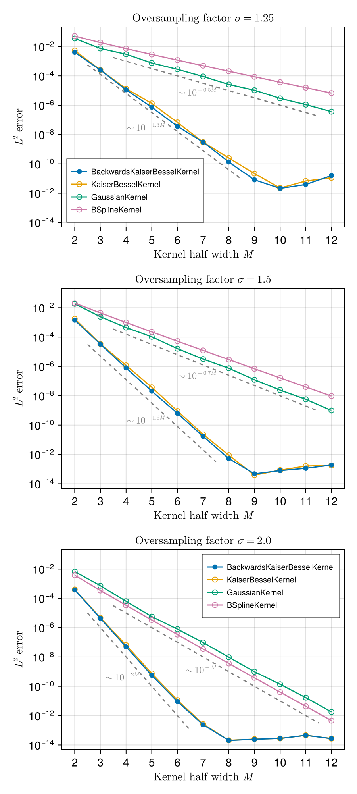

Accuracy
Here we document the accuracy of the NUFFTs implemented in this package, and how it varies as a function of the kernel half-width $M$, the oversampling factor $σ$ and the choice of spreading kernel.
Code for generating this figure
using NonuniformFFTs
using AbstractFFTs: fftfreq
using Random: Random
using CairoMakie
CairoMakie.activate!(type = "svg", pt_per_unit = 2.0)
# Compute L² distance between two arrays.
function l2_error(us, vs)
err = sum(zip(us, vs)) do (u, v)
abs2(u - v)
end
norm = sum(abs2, vs)
sqrt(err / norm)
end
N = 256 # number of Fourier modes
Np = 2 * N # number of non-uniform points
# Generate some non-uniform random data
T = Float64
rng = Random.Xoshiro(42)
xp = rand(rng, T, Np) .* 2π # non-uniform points in [0, 2π]
vp = randn(rng, Complex{T}, Np) # complex random values at non-uniform points
# Compute "exact" non-uniform transform
ks = fftfreq(N, N) # Fourier wavenumbers
ûs_exact = zeros(Complex{T}, length(ks))
for (i, k) ∈ pairs(ks)
ûs_exact[i] = sum(zip(xp, vp)) do (x, v)
v * cis(-k * x)
end
end
ûs = Array{Complex{T}}(undef, length(ks)) # output of type-1 transforms
σs = (1.25, 1.5, 2.0) # oversampling factors to be tested
Ms = 2:12 # kernel half-widths to be tested
kernels = ( # kernels to be tested
BackwardsKaiserBesselKernel(), # this is the default kernel
KaiserBesselKernel(),
GaussianKernel(),
BSplineKernel(),
)
errs = Array{Float64}(undef, length(Ms), length(kernels), length(σs))
for (k, σ) ∈ pairs(σs), (j, kernel) ∈ pairs(kernels), (i, M) ∈ pairs(Ms)
plan = PlanNUFFT(Complex{T}, N; m = HalfSupport(M), σ, kernel)
set_points!(plan, xp)
exec_type1!(ûs, plan, vp)
errs[i, j, k] = l2_error(ûs, ûs_exact)
end
fig = Figure(size = (450, 1000))
axs = ntuple(3) do k
σ = σs[k]
ax = Axis(
fig[k, 1];
yscale = log10, xlabel = L"Kernel half width $M$", ylabel = L"$L^2$ error",
title = L"Oversampling factor $σ = %$(σ)$",
)
ax.xticks = Ms
ax.yticks = LogTicks(-14:2:0)
for (j, kernel) ∈ pairs(kernels)
l = scatterlines!(ax, Ms, errs[:, j, k]; label = string(nameof(typeof(kernel))))
if kernel isa BackwardsKaiserBesselKernel # default kernel
# Make sure this curve is on top
translate!(l, 0, 0, 10)
else
# Use an open marker for the non-default kernels
l.strokewidth = 1
l.strokecolor = l.color[]
l.markercolor = :transparent
end
end
kw_line = (linestyle = :dash, color = :grey)
kw_text = (color = :grey, fontsize = 12)
if σ ≈ 1.25
let xs = 3.5:11.5, ys = @. 10.0^(-0.5 * xs - 1)
lines!(ax, xs, ys; kw_line...)
text!(ax, xs[3end÷5], ys[3end÷5]; text = L"∼10^{-0.5 M}", align = (:right, :top), kw_text...)
end
let xs = 2.5:8.5, ys = @. 10.0^(-1.3 * xs - 0)
lines!(ax, xs, ys; kw_line...)
text!(ax, xs[3end÷5], ys[3end÷5]; text = L"∼10^{-1.3 M}", align = (:right, :top), kw_text...)
end
elseif σ ≈ 1.5
let xs = 3.5:11.5, ys = @. 10.0^(-0.7 * xs - 1)
lines!(ax, xs, ys; kw_line...)
text!(ax, xs[3end÷5], ys[3end÷5]; text = L"∼10^{-0.7 M}", align = (:right, :top), kw_text...)
end
let xs = 2.5:7.5, ys = @. 10.0^(-1.6 * xs - 0.5)
lines!(ax, xs, ys; kw_line...)
text!(ax, xs[3end÷4], ys[3end÷4]; text = L"∼10^{-1.6 M}", align = (:right, :top), kw_text...)
end
elseif σ ≈ 2.0
let xs = 3.5:11.5, ys = @. 10.0^(-xs - 1)
lines!(ax, xs, ys; kw_line...)
text!(ax, xs[3end÷5], ys[3end÷5]; text = L"∼10^{-M}", align = (:right, :top), kw_text...)
end
let xs = 2.5:6.5, ys = @. 10.0^(-2 * xs)
lines!(ax, xs, ys; kw_line...)
text!(ax, xs[3end÷5], ys[3end÷5]; text = L"∼10^{-2M}", align = (:right, :top), kw_text...)
end
end
ax
end
legend_kw = (; labelsize = 10, rowgap = -4, framewidth = 0.5,)
axislegend(axs[begin]; position = (0, 0), legend_kw...)
axislegend(axs[end]; legend_kw...)
linkxaxes!(axs...)
linkyaxes!(axs...)
save("accuracy.svg", fig; pt_per_unit = 2.0)
In all cases, the convergence with respect to the spreading half-width $M$ is exponential, but the actual convergence rate depends on the chosen kernel function and on the oversampling factor $σ$. The straight dashed lines in the figure above are just an indication allowing to estimate the rate of exponential convergence of the different kernels as $M$ is increased. Clearly, the BackwardsKaiserBesselKernel (default) and KaiserBesselKernel are those which display the best convergence rates and the smallest errors for a given $M$. Note that the evaluation of both these kernels is highly optimised using basically the same techniques originally proposed for FINUFFT (that is, an accurate piecewise polynomial approximation of the kernel function).
In conclusion, there is usually no reason for changing the default kernel (BackwardsKaiserBesselKernel).